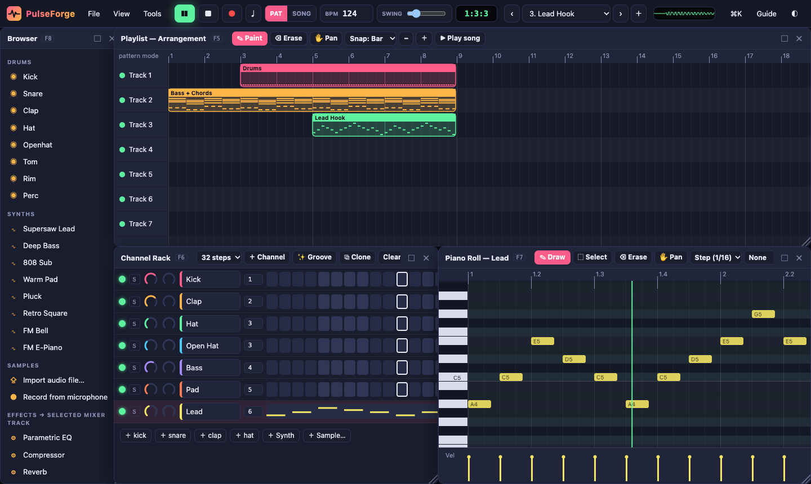
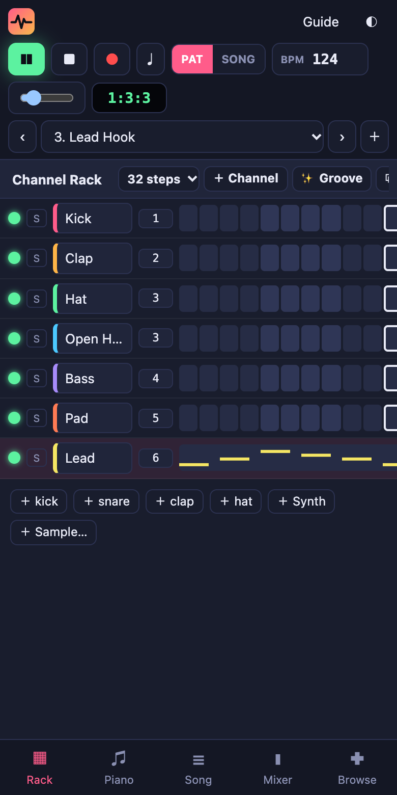

🌐
Web browser
Runs instantly in Chrome, Edge, Brave, Firefox or Safari. Nothing to install.
Launch in browserPulseForge Studio is a full beat-making and music production studio that runs in your browser and installs on every device: Windows, macOS, Linux, ChromeOS, iPhone, iPad and Android.
Nothing to sign up for. Your music stays on your device.


A step sequencer with paint-drag, per-step velocity, swing and 16–64 step patterns.
Scale lock, chord stamps, a velocity lane, ghost notes, quantize, and draw/select/erase tools.
One click gives you a fresh drum groove, a melody in your key, or a chord progression.
Arrange patterns into a full song with paint, move, resize and track mute.
EQ, compressor, reverb, delay, distortion, filter, chorus, bitcrusher and widener, with meters and a spectrum display.
Synthesized drums, supersaw, 808, bass, pads, plucks, FM bells, and a sampler for your own sounds.
Record your microphone, or play live from your computer keyboard or a MIDI controller.
Floating windows that snap and resize, five preset layouts, and full-screen tabs on phones.
Export WAV and MIDI, save project files, autosave, and undo everything.
Pick your device. We've highlighted the best option for this one.
Runs instantly in Chrome, Edge, Brave, Firefox or Safari. Nothing to install.
Launch in browserDesktop app for Windows 10 and 11 (64-bit).
Download .exeUniversal app for Apple Silicon and Intel Macs.
Download .dmgAppImage (any distro) or .deb (Ubuntu and Debian).
Download AppImage Download .debOpen this page in Safari, tap Share ⎋, then Add to Home Screen. It opens full-screen like a native app.
Step-by-stepInstall it straight from Chrome. It works offline once installed.
Step-by-stepInstall it from Chrome. It gets its own window and launcher icon.
MIT licensed with no build step. Self-host it anywhere or contribute.
View on GitHubEvery panel (Browser, Playlist, Channel Rack, Piano Roll and Mixer) is a floating window:
Your instruments: drums, synths or samples. Double-click one to edit its sound. The number next to it is the mixer track it plays through.
Short clips of notes for all channels. The rack's squares and the piano roll edit the same notes. Switch patterns with the selector at the top.
Where patterns are placed over time to make a song. PAT mode loops one pattern; SONG mode plays the playlist. Click the ruler to play from any bar.
Each track has volume, pan, mute/solo and an effects chain, and everything flows into the Master. Click a track to edit its effects.
| Space | Play / stop |
| Shift + L / R / M | Pattern ↔ Song mode · Record notes · Metronome |
| Ctrl/⌘ + Z · Ctrl/⌘ + Shift + Z | Undo · Redo |
| Ctrl/⌘ + S · O · E | Save project · Open project · Export WAV |
| Ctrl/⌘ + K | Command palette: search every action |
| F1 · F5 · F6 · F7 · F8 · F9 | Guide · Playlist · Channel Rack · Piano Roll · Browser · Mixer |
| Z S X D C V G B H N J M | Play notes on the selected channel (Q–I row = octave up) |
| [ and ] | Previous / next pattern |
| Piano roll: Delete · Ctrl+A · Ctrl+D | Delete · Select all · Duplicate |
| Piano roll: ↑ ↓ (Shift = octave) · ← → | Transpose · Nudge |
| Ctrl + mouse wheel | Zoom the piano roll or playlist |
Download the .exe above and run it. If SmartScreen appears, click More info → Run anyway (the app isn't code-signed yet). You can also open the studio in Chrome or Edge and click the install icon ⊕ in the address bar.
Download the .dmg, open it and drag PulseForge into Applications. The first time, right-click the app → Open → Open, because it isn't notarized by Apple yet. Or install from Chrome or Edge with the ⊕ icon.
AppImage: run chmod +x PulseForge-Studio-Linux.AppImage, then double-click it. Debian/Ubuntu: sudo apt install ./PulseForge-Studio-Linux.deb.
Open this page in Safari → tap Share → Add to Home Screen → Add. Launch it from the new icon. Switch off silent mode to hear sound.
In Chrome, tap Install app above, or ⋮ → Install app. It appears in your app drawer.
Click Install app above, or the ⊕ icon in Chrome's address bar.
.pfproj file with your samples inside. Open it on any device with File → Open, or drag it into the window.Yes. PulseForge is open source under the MIT license. Every feature is free for everyone, with no trial or upgrade.
Yes. Once you've installed it (or opened it once), it works without an internet connection.
Click anywhere in the studio first, because browsers only allow audio after you interact with the page. On iPhone, switch off silent mode. Also check that the channel and mixer track aren't muted.
Yes, in Chrome, Edge and the desktop app. Plug it in, select a channel and play. Press ● to record while the pattern plays.
Use File → Save project file and open that file on the other device. Samples are included in the file.
No. PulseForge is an independent project, not affiliated with Image-Line or FL Studio.